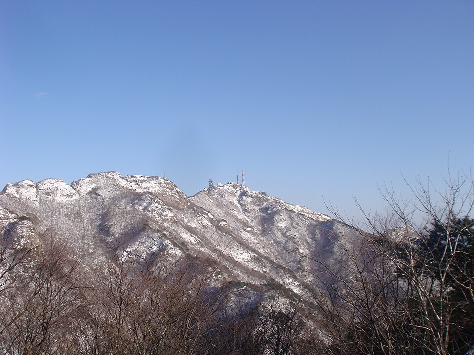

계룡 검정고시 — 수학과 과학은 한 묶음으로 공부하면 덜 힘듭니다

수학이 약한 분들은 대개 과학도 함께 부담스러워합니다. 두 과목을 따로 계획에 넣으면 하루에 힘든 과목을 두 개나 해야 하니 금방 미루게 됩니다. 그런데 두 과목은 생각보다 많이 이어져 있어서, 한 묶음으로 다루면 오히려 짐이 가벼워집니다. 계룡(계룡시) 검정고시를 준비하면서 수학·과학이 걱정인 분들께 드리는 방법입니다.
과학 계산 문제에서 막히는 건 대개 수학 때문입니다
과학에서 속력, 밀도, 전류처럼 식이 나오는 문제가 어렵게 느껴지는 이유를 들여다보면, 과학 개념보다 분수 계산이나 식 바꾸기에서 막히는 경우가 많습니다. 공식을 외워도 숫자를 넣고 풀어내는 단계에서 손이 멈추는 것입니다.
이런 경우 과학 문제를 더 푸는 것보다 수학에서 비례식, 분수, 간단한 일차방정식을 먼저 다지는 편이 빠릅니다. 수학에서 익힌 계산이 과학 문제에서 바로 쓰이면, 한 번 공부한 것이 두 과목 점수로 돌아옵니다.
같은 주에 맞춰 보면 좋은 단원
두 과목 진도를 따로 정하지 말고, 서로 이어지는 단원을 같은 주에 배치해 보세요. 예를 들어 수학에서 비례 관계나 그래프를 볼 때 과학의 운동·힘 단원을 함께 보면, 그래프를 읽는 법을 두 번 연습하게 됩니다. 수학의 단위와 비율을 볼 때는 과학의 밀도·농도 같은 내용을 붙이면 좋습니다.
교재마다 단원 순서와 이름이 조금씩 다르니, 처음에 두 과목 목차를 나란히 놓고 이어지는 곳을 표시해 두면 계획 짜기가 훨씬 쉬워집니다.
과학은 개념부터, 계산 문제는 나중에
과학 문제가 모두 계산인 것은 아닙니다. 생물·지구과학 쪽은 개념을 이해하고 그림이나 표를 읽으면 풀리는 문제가 많습니다. 그래서 과학은 계산 없는 문제부터 점수를 챙기고, 계산 문제는 수학 기초가 어느 정도 잡힌 뒤로 미루는 순서를 권합니다. 처음부터 계산 문제에 매달리면 과학 전체가 어렵다고 느끼게 됩니다.
하루 시간은 수학을 앞에, 과학을 뒤에
하루에 두 과목을 함께 볼 때는 머리가 맑은 앞쪽에 수학을 두고, 과학은 뒤에 이어서 보는 편이 좋습니다. 방금 푼 계산이 과학 문제에서 다시 나오면 기억도 오래 갑니다. 검정고시는 전 과목 평균 60점이면 합격이니, 두 과목 모두 만점을 노리기보다 기본 문제를 놓치지 않는 것을 목표로 잡으세요.
계룡에서 이렇게 함께합니다
저희는 1:1 맞춤 과외라 두 과목을 한 선생님이 이어서 보며 겹치는 부분을 한 번에 정리합니다. 엄사면·두마면·신도안면·금암동 등 계룡시 안은 방문 수업이 가능하고, 일정이 자주 바뀌는 분은 화상(줌) 수업으로 시간을 맞춰 이어 갑니다.
관련 검색어: 계룡검정고시 · 계룡검정고시과외 · 계룡시검정고시과외 · 충남계룡검정고시 · 계룡수학과외